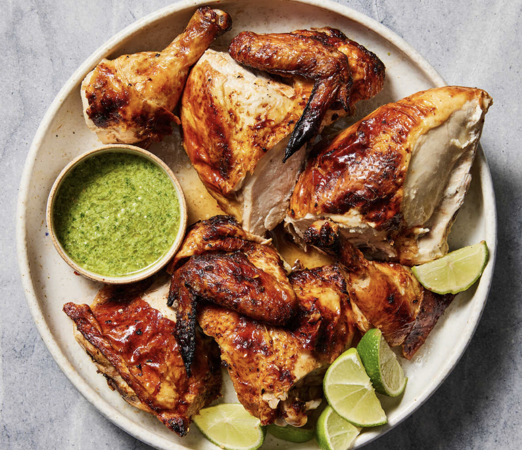

Roast Chicken

Ingredients
- 1 whole chicken, packet of giblets removed
- 1 tablespoon extra-virgin olive oil
- 0.5 teaspoon Italian seasoning
- kosher salt and freshly ground black pepper, to taste
Instructions
- Preheat the oven to 425°F (220°C), place a baking rack in the lower ⅓ of the oven, and bring the chicken to room temperature. Pat the chicken dry with paper towels.
- Place the chicken breast side up in an oven-safe pan (I prefer cast iron). Truss the legs. Drizzle with oil and use your hands to rub it all over the chicken.
- Season the chicken with salt, pepper, and Italian seasoning, patting the seasoning in with your hands.
- Roast the chicken for 70 to 90 minutes, or until the juices run clear. Double check doneness with an instant-read thermometer placed in the thickest part of the thigh. It should read 165°F (74°C). Let the chicken rest for 15 minutes on a cutting board before slicing and serving.
- Enjoy!